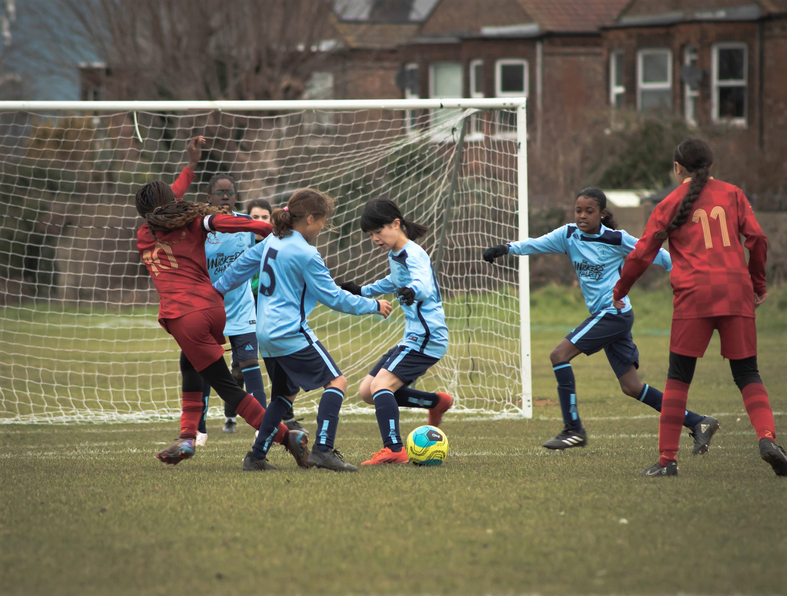
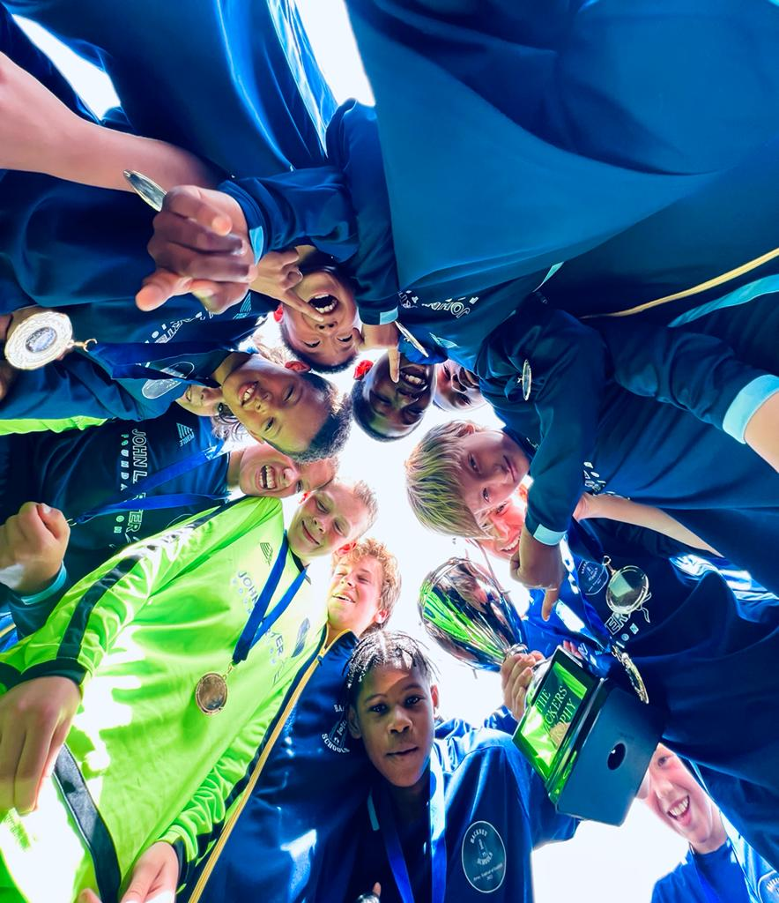

Looking ahead to 2026–27 · School sport, new opportunities and a shared love of the game.
Enquiries ↗Every child.
Every chance.
Through sport.
Welcome to Hackney Schools Athletics Association. Helping primary school children build confidence, find their team and discover a lifelong love of sport.

A borough full of possibility.
From the football pitch to the cross-country course, discover sport for Hackney’s primary schools.
Borough representative teams
Boys’ and girls’ district football, bringing together young players from primary schools across the borough.
02 / SCHOOL SPORTCross country
The Primary Cross Country League is part of HSAA’s planned 2026–27 sporting programme.
03 / FOOTBALLFive-a-side competition
School football competitions for boys and girls across Hackney.
04 / FOOTBALL9-a-side
Boys’ and girls’ school leagues, bringing friendly rivalry back to the pitch.
05 / SCHOOL SPORTKwik cricket
Kwik cricket is part of HSAA’s planned 2026–27 programme for Hackney primary schools.
06 / SCHOOL SPORTTag touch
Tag rugby is part of HSAA’s planned 2026–27 sporting programme.
07 / SCHOOL SPORTOrienteering
Orienteering festivals are part of HSAA’s planned 2026–27 programme for Hackney primary schools.

Local talent.
Lasting memories.
Our boys’ and girls’ district teams give young footballers the opportunity to represent Hackney, meet players from other schools and compete beyond the borough.
The girls won the Southern Counties Cup in 2026, following the boys’ success in 2024.
Discover our representative teams →More than the final score.
We believe sport is a powerful way to build teamwork, discipline and confidence. HSAA provides extra-curricular sporting opportunities and encourages healthy rivalry between schools and districts, underpinned by equal opportunities, child protection and safeguarding.
Be part of HSAA →